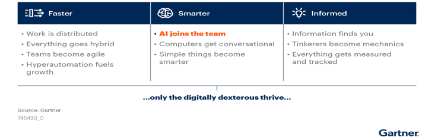
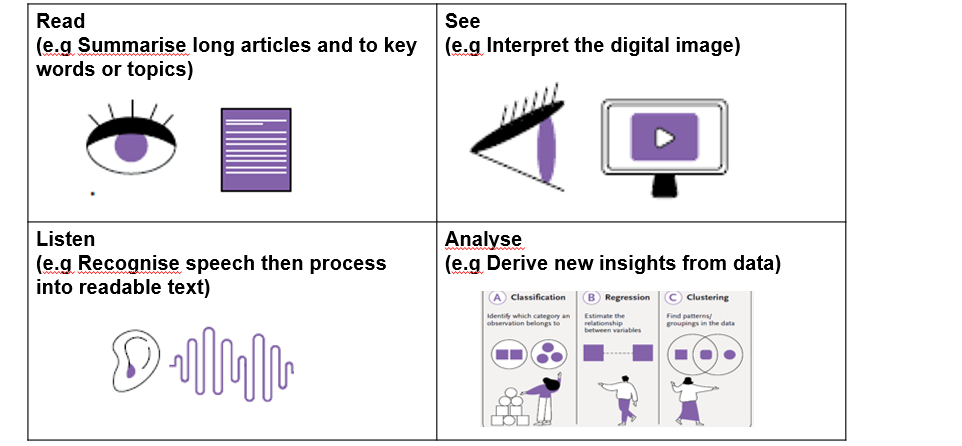
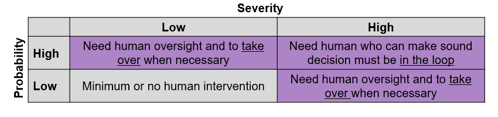

AI will increasingly be used to augment human efficiency, beyond usual automation
Gartner’s prediction is that AI would evolve over the next several years to shift from automation to augmentation, where humans and machines collaborate to:
1. Save our time by taking over tasks that require analysis of large amounts of data;
2. Uncover unexpected opportunities (e.g new positions, problem trends, info gaps) by adopting AI technologies that identify trends and patterns hidden in large datasets;
3. Identify sensitive compliance blind spots that could be damaging to our reputation; and
4. Reallocate talent ahead of needs for faster engagement and time to productivity.
Future of Work Trends: AI Joins the Team

What is AI?
AI is a set of tools simulating aspects of human intelligence

But there are times when AI could cause more harm than good
1. Cases where the severity of error is high (e.g Amazon’s Alexa voice assistant "challenged" a 10-year-old girl to touch a coin to the prongs of a half-inserted power plug*)
2. Cases where the probability of having a wrong prediction by AI is high
If AI’s deliverables has high probability of error + high severity from error, AI governance need to be in place e.g. humans must be in the decision loop.

For more details on the framework, we can refer to IMDA's AI framework in the download below.